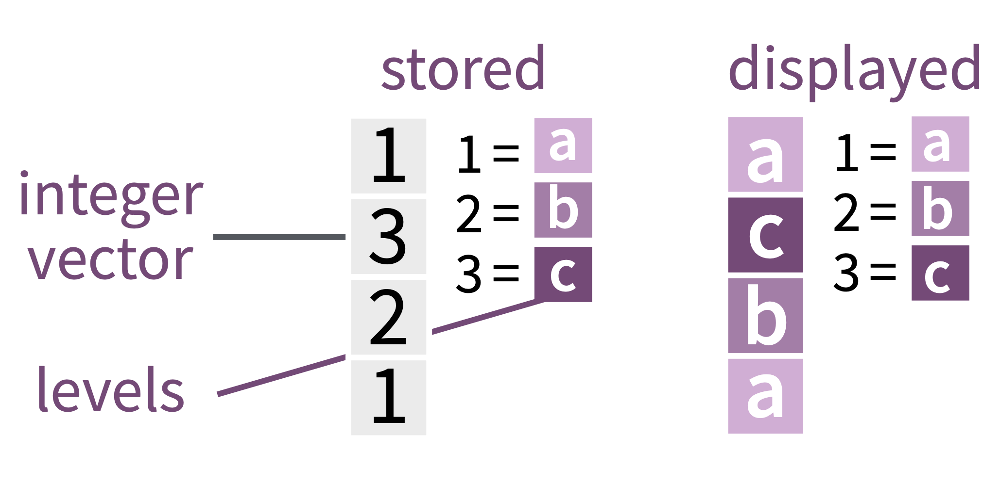
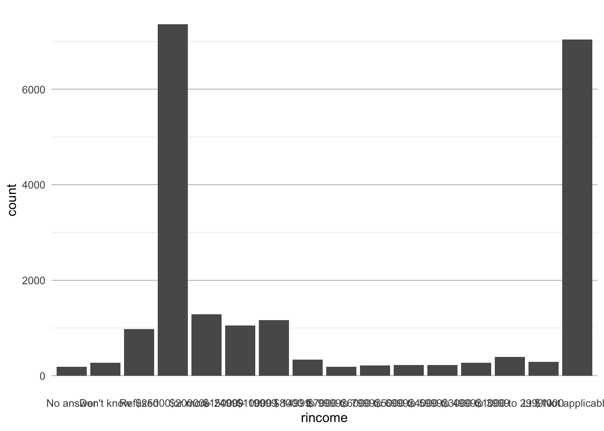
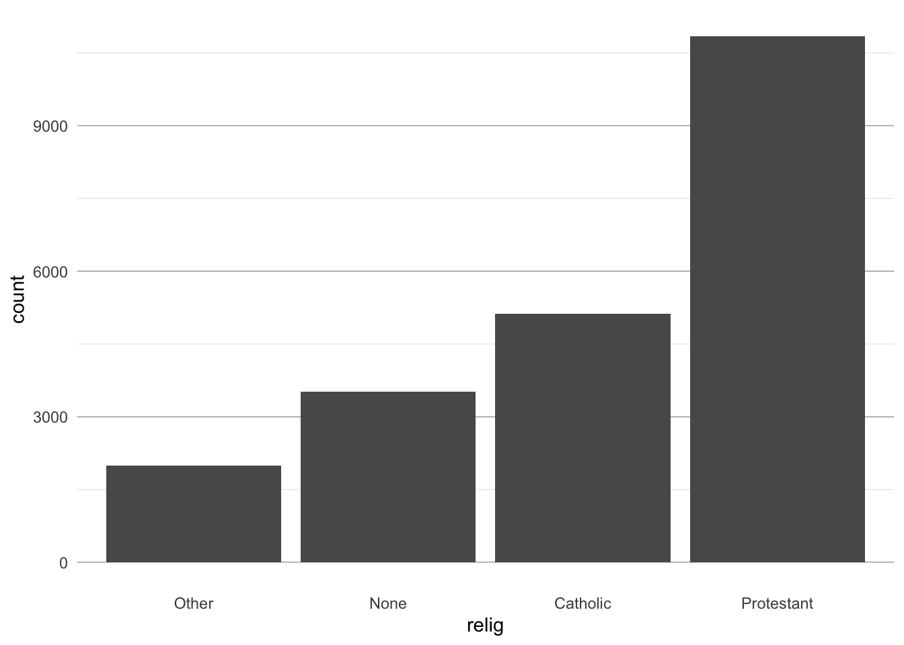
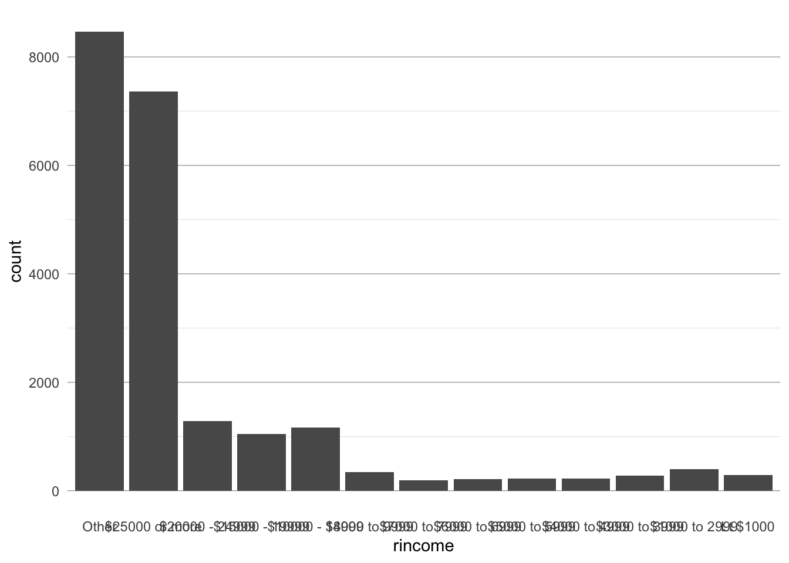

Categorical Variables with forcats
Tutorial on wrangling categorical data
As we have seen, forcats is the R package to work with factors. A factor is the R data structure for categorical data, that is, variables having a fixed and known set of possible values. Factors are also useful when working with character vectors, such as reordering them to improve visualizations.
Specifically, a factor is an integer vector with a levels attribute. A factor stores a set of mappings from integers to categorical values. R only displays the levels associated with the integers, not the integers themselves.
In order to better understand what the following functions are doing, let’s look again at what a factor looks like in R:

(Picture from the great forcats cheatsheet)
Getting started with forcats üê±
So now that we have repeated the basics on factors, let’s get started with the basic forcats functions!
Of course, we have to load the package first. We could use the tidyverse package, but since this is a forcats tutorial, we might as well load our package specifically. In addition, we will need the dplyr package for the basic data manipulations that we all know and love, as well as ggplot2 to draw some nice graphs üë©‚Äçüé®.
Step 1. Load the packages forcats, dplyr and ggplot2.
library(forcats)
library(dplyr)
library(ggplot2)In this tutorial, we will use the functions we just learned in the presentation to analyse data from the General Social Survey. We get a sample of the data in forcats by calling gss_cat. The General Social Survey is a large long-running survey of US citizens, and gss_cat includes some of the answers for the years 2000 to 2014. The variables are all categorical, so we can deal with them nicely using forcats.
Step 2. Load the GSS data into a variable.
data <- gss_catLet’s get an overview of our dataset first.
Step 3. Inspect the data.
dataWe see that the data is now stored in a tibble, which doesn’t make all the levels of a factors obvious right away. To see the levels of a factor, we can use count().
data %>% count(rincome)Alternatively, we can also draw a bar chart to see the levels.
ggplot(data, aes(rincome)) +
geom_bar() 
We already see a challenge arising here: the factor has too many levels, which makes the plot look really messy. Soon, we will find out how to deal with issues like these.
When working with factors, the two main operations are
(1) changing the order of levels and
(2) changing the values of levels
The functions of forcats are built to deal with these two tasks, which we will do now. In this tutorial, we will focus on the application of the functions in plots to make the functionalities more visual.
Exercises üë©‚Äçüè≠
Task 1 Investigate the average age across the party identifications. Reorder the levels so that the overall trend becomes easily visible. Plot the result in a graph.
partyid_age_average <- data %>%
group_by(partyid) %>%
summarize(
age = mean(age, na.rm = TRUE)
)
ggplot(partyid_age_average, aes(age, fct_reorder(partyid, age))) + geom_point()
Note that fct_reorder() is only useful if the factor has levels that aren’t already ordered. For example, it wouldn’t make sense to reorder the levels of the rincome variable in this dataset, as its levels are already ordered.
Task 2 Investigate the average number of hours spent watching tv per day across the income groups. Pull the “Not applicable” level to the front. Plot the result in a graph.
rincome_age_average <- data %>%
group_by(rincome) %>%
summarize(
tvhours = mean(tvhours, na.rm = TRUE)
)
ggplot(rincome_age_average, aes(tvhours, fct_relevel(rincome, "Not applicable"))) + geom_point()Task 3 Provide a bar chart showing the three largest levels of the relig factor in increasing order. Aggregate the other religions into an “Other” level.
religion_count <- data %>%
mutate(relig = fct_lump(relig, n = 3) %>%
fct_infreq() %>%
fct_rev())
ggplot(religion_count, aes(relig)) + geom_bar() 
Remember the ugly plot showing the distribution of reported incomes? We want to make it look nicer now. In the first step, we want to change the values of levels that have no data- either because the survey participant refused to answer, didn’t know his income (weird but ok), simply didn’t answer or it was not applicable.
Task 4 Group these four levels (“No answer”, “Don’t know”, “Refused”, “Not applicable”) into one “Other” level and provide a new plot for the distribution of reported incomes.
⚠️ (Note that you should generally be careful with recoding various levels into one. Is giving “No answer” as answer really to be treated equal to “Don’t know”? I don’ know- we are doing it for practice reasons here, but in real-world data science, they are probably not the same thing.)
rincome_recoded <- data %>%
mutate(rincome = fct_recode(rincome,
"Other" = "No answer",
"Other" = "Don't know",
"Other" = "Refused",
"Other" = "Not applicable"
))
ggplot(rincome_recoded, aes(rincome)) + geom_bar()
Better, but still not nice. Let’s aggregate some of the reported income groups into larger income brackets.
Task 4 Create a bar chart showing three larger reported income brackets than provided in the data, plus the “Other” factor.
rincome_recoded_2 <- rincome_recoded %>%
mutate(rincome =
fct_collapse(rincome,
"<10000" = c("Lt $1000", "$1000 to 2999", "$3000 to 3999", "$4000 to 4999", "$5000 to 5999", "$6000 to 6999", "$7000 to 7999", "$8000 to 9999"),
">=10000_&_<20000" = c("$10000 - 14999", "$15000 - 19999"),
">=20000" = c("$20000 - 24999", "$25000 or more")))
ggplot(rincome_recoded_2, aes(rincome)) + geom_bar()
Thank you for joining this tutorial!
For more exercises, try the Introduction to forcats by Emily Robinson, or for easier examples look at “Getting started” section on the forcats Website. For an academic deep-dive into forcats and categorical variables, look at the paper Wrangling categorical data with R by Amelia McNamara and Nicholas J Horton.
Sources
This tutorial is based on the book R for Data Science by Hadley Wickham and Garrett Grolemund. The forcats cheatsheet was also used in creating this tutorial.
A work by Janine De Vera & Victor Möslein
Prepared for the Workshop as part of Intro to Data Science, taught by Simon Munzert